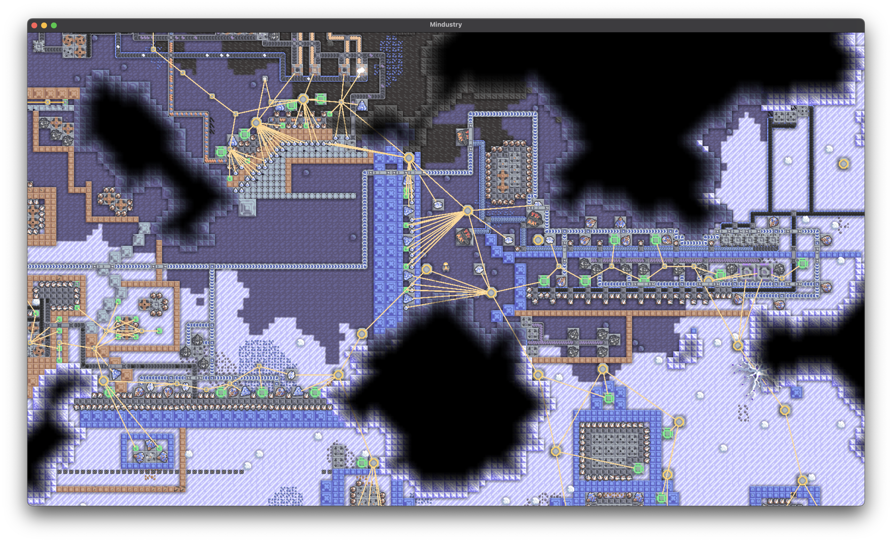
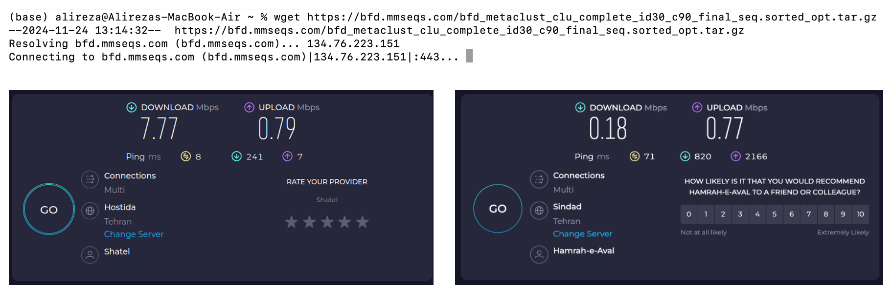
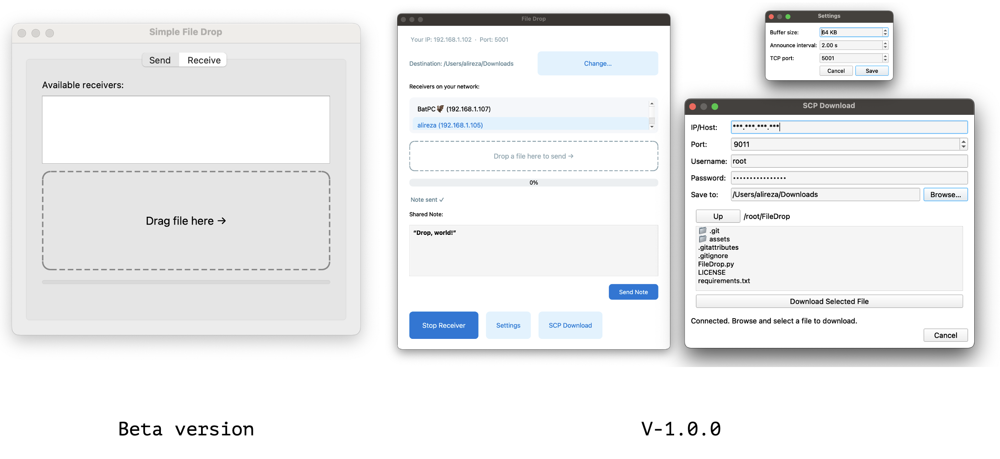

FileDrop - Thanks to Mindustry
FileDrop - Thanks to Mindustry
Jul 11, 2025 | S.Alireza Hashemi
🎮 Mindustry: Link
For the last holidays I dove back into Mindustry. I’d played solo before, but this time four of us teamed up over a local session—and wow, it was a blast. It still amazes me how they pack so much detail and smooth play into a 70 MB game.
Cross-platform? ✔️
Free to play? ✔️
Easy to set up? ✔️

Back at work I wanted to bring our four-day campaign onto my own PC. That meant reinstalling the exact build we’d used, then copying the saves. With my snail internet (see earlier posts) that sounded painful. Then I remembered how easily the game connected over LAN—why not move the files the same way?
Manual sharing? Nope.
Search around for some tools? Also Nope.

So I put together a quick transfer app in PyQt. A few prompts to GPT later and it felt good enough to release. Say hello to FileDrop, a small, cross-platform file-sharing toolkit.
While building it I tacked on a couple of bonuses: sending short notes (handy for mirroring GPT prompts between two machines) and a one-click option to pull files from an SSH server via SCP—to finally scratching that old itch.

Github: Link
Downloads (V1)
| Platform | File |
|---|---|
| Linux | FileDrop-linux.tar.gz |
| macOS | FileDrop-mac.zip |
| Windows | FileDrop-windows.7z |